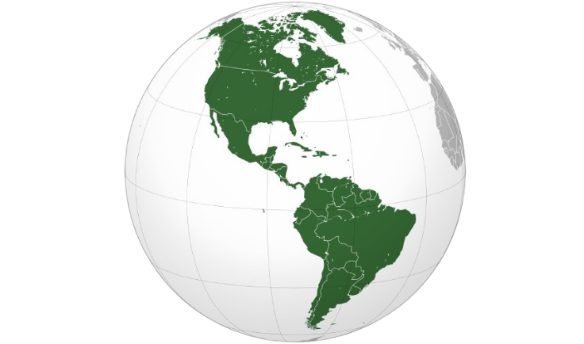
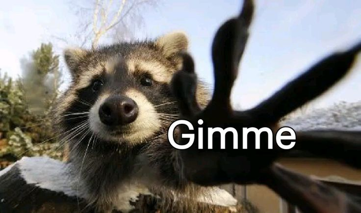
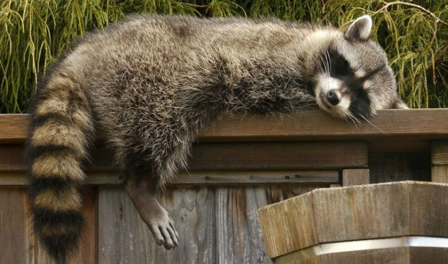
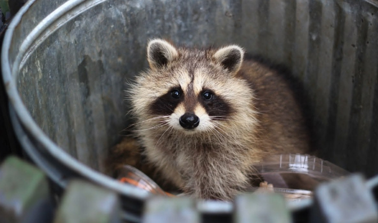
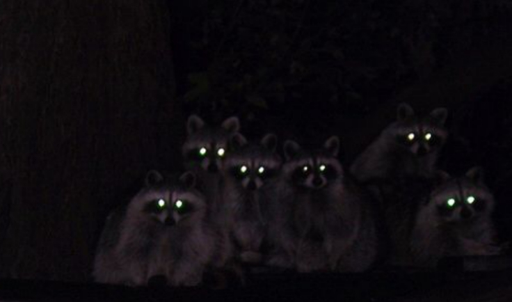
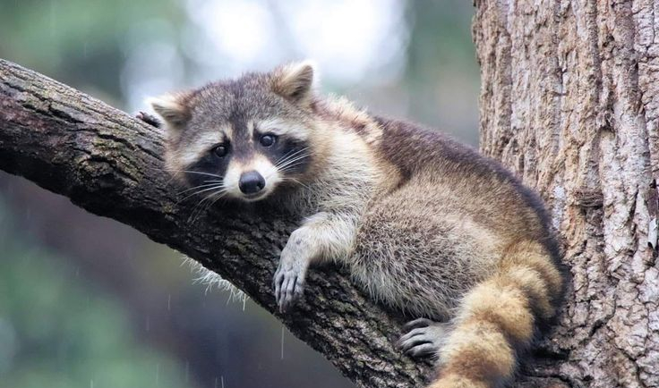

Los mapaches son animales que despiertan curiosidad por su apariencia y su comportamiento.
Con su característica máscara alrededor de los ojos y su gran habilidad para explorar su entorno, se han convertido en uno de los mamíferos más reconocibles.
La palabra «mapache» proviene de mapachtli en lengua náhuatl, que significa «el que toma todo en sus manos»
Su nombre cientifico es Procyon Lotor, Procyon es la familia de su especie que significa antes del perro, y Lotor de su sub especie que significa lavador

Los mapaches son originarios de América y suelen vivir en bosques, zonas cercanas al agua y también en espacios urbanos. Su gran capacidad de adaptación les permite encontrar alimento y refugio en distintos ambientes.

Sus patas delanteras tienen un sentido del tacto muy desarrollado. Por eso suelen tocar, mover y examinar objetos, ya que a través de sus manos obtienen información sobre texturas, formas y posibles alimentos.

Son animales curiosos, inteligentes y muy observadores. Aunque pueden parecer amigables por su aspecto, siguen siendo animales silvestres, por lo que es mejor observarlos con distancia y respeto.

Son omnívoros. Se alimentan de frutas, insectos, huevos, peces y pequeños animales, aunque también aprovechan restos de comida cuando viven cerca de las personas.
Por eso es normal verlos revolver en basureros, parecido a lo que se ve en Montevideo pero sin la ternura

Los mapaches son principalmente nocturnos. Durante la noche salen a buscar alimento y a explorar su entorno.

Gracias a sus fuertes patas y garras, los mapaches pueden trepar árboles y otras superficies con facilidad, lo que les ayuda a escapar de depredadores y encontrar refugio.